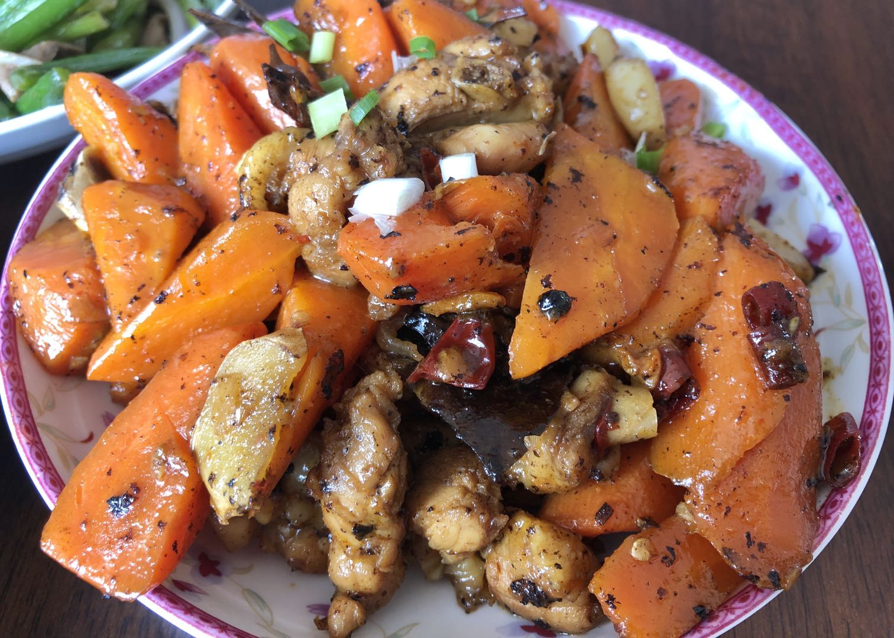

离开武汉
2020年1月18日~2020年5月11日，今年的寒假放了114天，约占全年总进度条的33%。
我妈说「长这么大我们还没有连续坐在一起吃了这么多顿饭」，这说的是事实，这样的长期共处和以前假期回家短暂停留相比，带给我的感觉很不一样。我感觉我看待他们更像是看待我的好友之一一样，我说不清楚这么说是代表着我和爸妈的距离是拉近了还是变远了。具体体现在我开始像研究朋友一样观察父母的性格，我爸性格跟我比较像我和我爸性格比较像，在遇到自己感兴趣的话题之前显得沉默寡言，所以我和我爸单独吃饭时往往冷场。我妈就不一样，会主动叨叨家长里短的事，也不会总是反驳别人，乐于接受别人的观点，所以我跟我妈吃饭就会自然很多。
长大之后，父母越对我关怀备至，我就越感受到「良心不安」。例如对于爸妈给我洗衣服、盛饭、刷碗，后来甚至对于给我做饭，我都会觉得这不是我应得的。我没有给他们付出过什么，却一直享受了他们对我的照顾。于是上大学后我回家就自己洗自己的衣服，这个假期我都自己刷自己的碗，也尽量自己买菜、炒菜。好像自己做的多一点，爸妈做的少一点，我心里能「安」一点。
收拾背包离开家的前一天，照着菜谱我做了一道「胡萝卜烧鸡腿肉」，做出来了像模像样的味道让我妈放心了我「一个人在外也能吃饱」。
